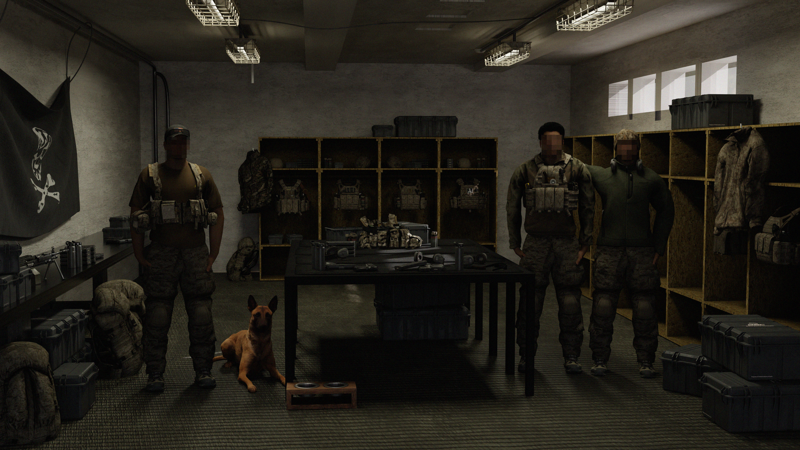

NAVAL SPECIAL WARFARE COMMAND • 2012-ERA ARMA 3 MILSIM
NSWC is a fictional Naval Special Warfare Arma 3 milsim built around a 2012-era setting. The goal is not to reproduce a real organization one-for-one. We use the period, equipment, mission sets, and command structure as a grounded framework for a serious, cohesive experience that still works as a game.
What separates NSWC from a conventional milsim unit is the amount of work placed into the systems behind the mission. We do not rely on Arma's default loop of spawning, briefing, shooting, and returning to base. We build complete internal systems that remove friction, create continuity, and give players information and tools that normally do not exist in Arma 3.
That includes custom equipment and configuration work, attendance and availability systems, training records, Green Team progression, role and billet management, mission intelligence, target-development workflows, AAR support, administrative tooling, unit-specific interfaces, and other quality-of-life features created specifically for NSWC. These systems are designed to make the experience easier to use without making it simpler or less demanding.
The result is a unit where actions have context. Training feeds into qualifications. Availability feeds into planning. Intelligence feeds into missions. Missions generate follow-on information. Personnel, equipment, and operational history remain connected instead of being reset every session. Our objective is to make Arma feel like a persistent environment rather than a collection of unrelated scenarios.
We place a strong emphasis on quality of life. Realism should come from good systems, believable procedures, and deliberate decision-making, not from forcing players to fight the game itself. Wherever Arma is clumsy, repetitive, or limited, we try to build a better workflow around it. That philosophy applies to both gameplay and administration.
Operations remain intelligence-driven and deliberately planned, with reconnaissance, target development, aviation, assault, and enabling elements contributing to a larger mission picture. There are no filler raids designed only to occupy a scheduled night. The aim is for every event to feel like part of the same 2012-era operational environment.
Applicants are selected for maturity, consistency, communication, and willingness to work within the system. Mechanical skill can be developed. The standard is whether someone improves the team and contributes to the experience we are building.
NSWC is a fictional Arma 3 simulation community. It is not affiliated with or endorsed by the United States Navy, Naval Special Warfare Command, JSOC, or the Department of Defense.
Executes high-risk direct action, hostage recovery, VBSS, and classified assault tasking in coordination with JSOC.
Submit InterestConstructs target packets, manages intelligence correlation, develops mission intelligence, and briefs NSWC command staff.
May become a paid analytical position. Submit InterestConducts POI identification, source development, link analysis, and supports target validation for NSWC operations.
Submit InterestProvides precision infil/exfil, close support, and urban insertion for small NSW elements.
Submit InterestExecutes night-time lift operations, hoist work, and multi-ship infiltration packages.
Submit InterestManages heavy-lift rotary operations, aerial refuel, and extended-range overwater insertions.
Submit InterestNSWC is designed as a connected simulation rather than a sequence of isolated missions. Operations can originate from reconnaissance, intercepted communications, source reporting, exploitation of captured material, previous mission outcomes, or deliberate campaign planning. The supporting systems preserve that information and turn it into usable context for the next event.